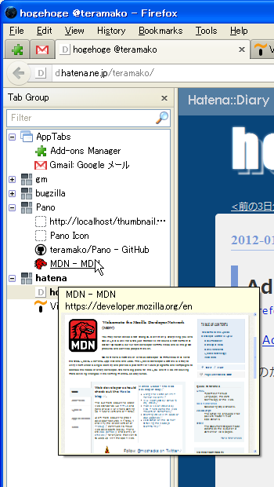
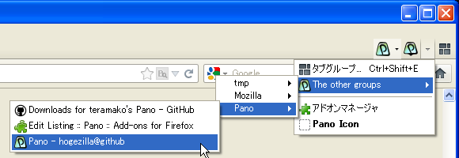
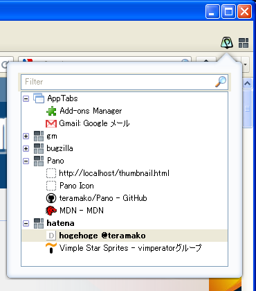

Pano
Show the tabgroups list. No more needs open Panorama view :-P
Feature
- list tabgroups on the sidebar
- Pano button toggles open/close the sidebar
and groups menu list for switching - add the other groups and it's tabs in all-tabs-button's menu
- Pano panel (like the sidebar)
The sidebar

Shows all tabs list by grouping. The first group is AppTabs (Pinned tabs) list, the next... are normal tabgroups, and the last is orphaned tabs group.
Opening the sidebar
- "Menubar" -> "View" -> "Sidebar" -> "Tab Group"
- KeyNavigation: Ctrl + Alt + p or Command + Option + p(on Mac OS X)
- Pano button(see below)
Double click:
- a tab item: switch to the tab (also do by ENTER)
- If you want to switch by SINGLE click, see about:config
- a group item: be into editing the group name (also do by F2)
Drag & Drop
Can Drag & Drop multi tab items or URL items.
Accept type:
- tab items
- Bookmark items
- Bookmark folder (open all URLs in the folder recursively)
- anchor element of HTML
Filtering
List up only matches the title or the URL.
*- wild card
|- OR condition
Caution: On filtering, Drag & Drop is not available :(
Context menu
- Open a new Tab (only on a group)
- Bookmarks all tabs in the group or the tabs
- Reloads all tabs in the group or the tabs
- Hibernate all tabs in the grop or the tabs (saves the sessions and unloads)
- Create a new tabgroup
- Close the selected tabgroup(s) (only on groups)
- Close the selected tab(s) (only on tabs)
- SubContents (only the sidebar)
- show the other sidebar contents as a sub content
- Toggle show toolbars
- Close the sidebar (only the sidebar)
Hide the tabbar automatically
The checkbox in bottom of the sidebar can hide the tabbar during the sidebar is opening.
Pano button
Pano button is in Cusutomize Toolbar by default.
Needs drag and drop the button to a toolbar if you want use.
is in Cusutomize Toolbar by default.
Needs drag and drop the button to a toolbar if you want use.
Pano button has 2 features.
- it's button toggle open/close the sidebar.
- it's menu has tabgroups menu for switching to the tabgroup.
- the selected tab will be the last selected tab in the tabgroup.
All tabs list

Add "The other groups" menu to all-tabs-list button. The menu has tabgroups (without the current group) menu, and has tabs menu in the tabgroup menu for switching.
Caution:
when set browser.allTabs.previews to true in Preferences(about:config),
this feature will not be available.
Pano panel

On click the button or Alt + p (on Mac OS X: Ctrl + p), popups the panel like the sidebar. And the usage is also same as the sidebar.
The button is in Cusutomize Toolbar same as Pano button.
Customize Toolbar
Pano sidebar and panel have it's own customizable items.
Following items are available:
- Back
- Forward
- Back / Forward tab selection history
- Expand All
- Collapse All
- Expand / Collapse all groups
- Close Empty
- Close all empty groups
- Filter
- Filter box
- Hide Tabbar
- Hide tabbar automatically during the sidebar is opening (only the sidebar)
Pano option
Can some settings from the option button in about:addons.
CSS Editor
Can edit CSS and change looks. The css file is saved in your profile directory as 'panoStyle.css'.
about:config
extensions.pano.autoHideTabbar- Hide the tabbar during the Pano sidebar is opening
extensions.pano.showCloseButton- Show close button to each of tab and group items
extensions.pano.showTabNumber- Show tab number
extensions.pano.switchTabBySingleClick- Switch the tab by SINGLE click not double click
extensions.pano.panel.autoCloseByTabSelect- close the panel automatically when switches a tab
extensions.pano.tooltip.showThumbnial- Show the thumbnail image in the tooltip
extensions.pano.tooltip.showTitle- Show the title in the tooltip
History
all commits is here
Report bugs or request
Please report to GitHub Issues if you find bugs or have ideas.
License
Thease code are licensed under a disjunctive tri-license giving you the choice of one of the three following sets of free software/open source licensing terms.
Full version, see license.txt.